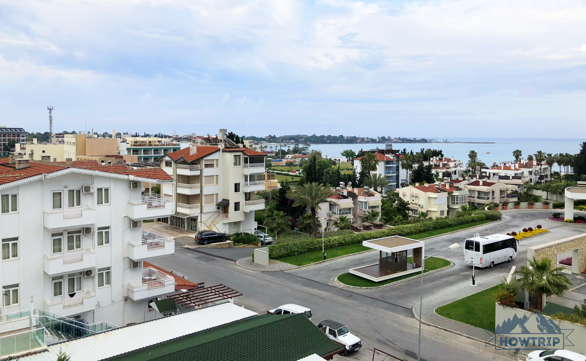
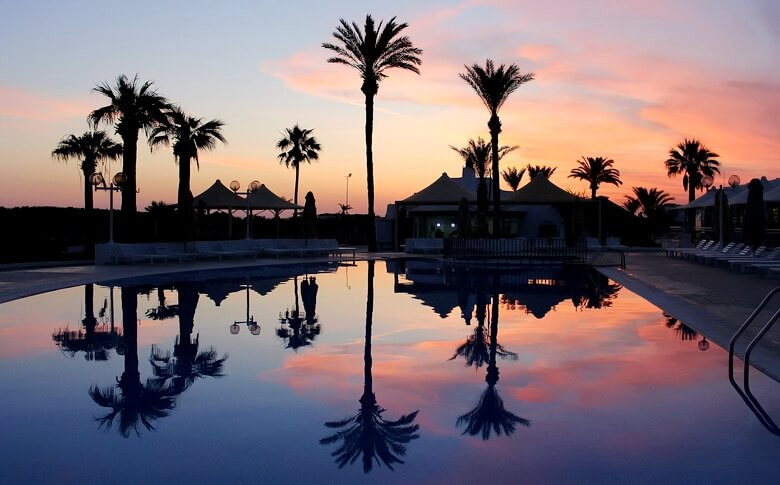
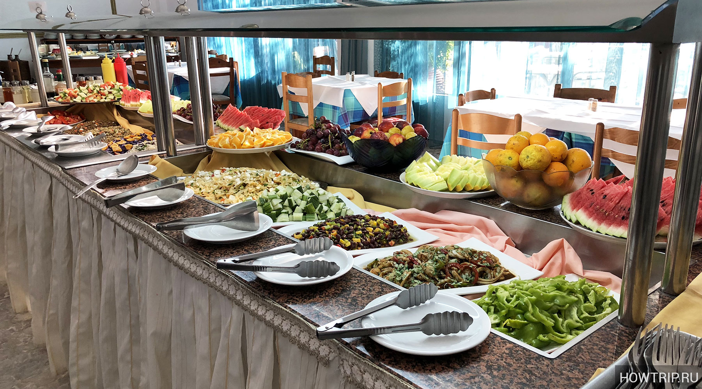
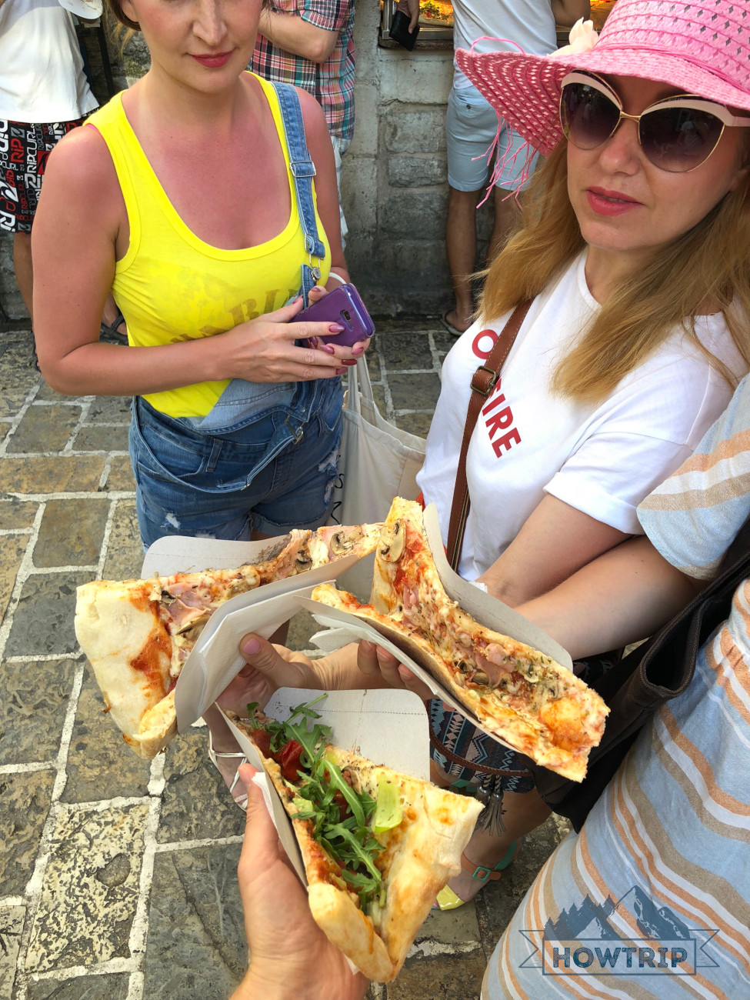
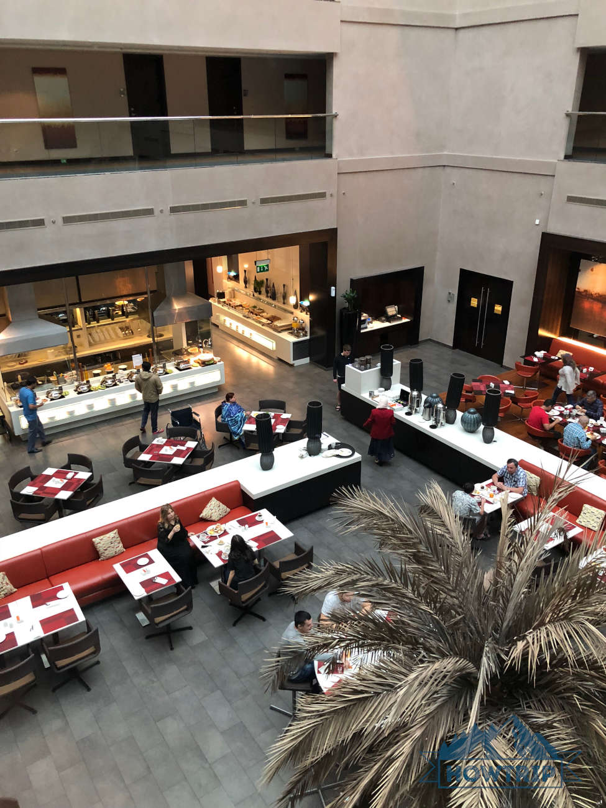
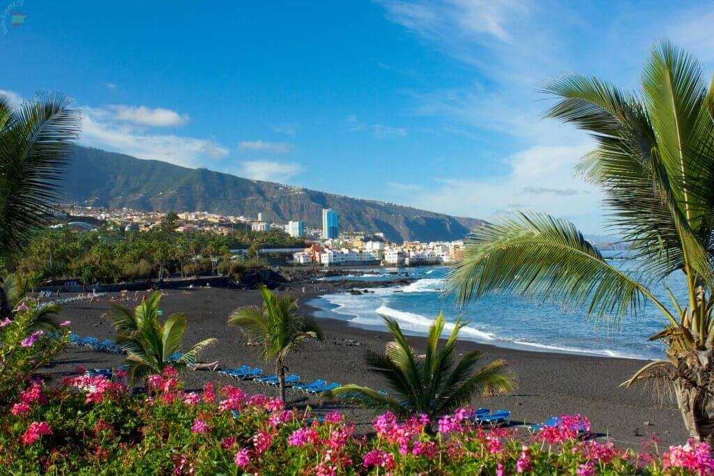

Топ-10 стран для отдыха. Сколько стоит и в каких странах считается лучшим?
Что такое все включено (all inclusive)?
Все включено (обозначается как All / Al) – это система обслуживания в отеле, в цену которой входит номер, шведский стол 24/7 (завтрак, обед, ужин и +перекусы), местные напитки алкогольные и без- и т.д. Иначе говоря, приятная опция, обеспечивающая по-настоящему «овощной» отдых, когда туриста и кормят, и поят, и веселят. К слову, all inclusive не только про питание: развлечения также «включены» — анимация, детские клубы, спа и далее по списку (но зависит от гостиницы). Вообще, данная концепция идеально подходит под формат «пляжный отдых» или «семейный отдых с детьми».Какие цены на пляжный отдых «все включено»?
Разумеется, all всегда обходится дороже, чем другие системы обслуживания. С другой стороны, еда и напитки оплачены наперед – можно дать себе волю и унять внутреннего бухгалтера.Усредненно, цены на отдых все включено на 30% выше, чем на тот же тур, но с завтраками (BB), и на 20% больше, чем полный пансион (FB). Если отталкиваться от Турции, как «рассадника» олла, то в разгар сезона путевка на двоих на 7 дней стоит:
- от 24000 гривен – отели 5 звезд, первая линия
- от 18500 гривен – отели 4 звезды
- от 15000 гривен – отели 3 звезды
1. Турция

Турция поставила заграничную систему на поток, да так, что можно найти и недорогой отдых все включено, и all 18+ (т.е. без детей), и королевский сервис в супер-отелях. Горы еды и реки алкоголя, жаркая страна и безвиз.Типичный турецкий отель – это зеленая территория, бассейн (несколько, а то и с горками), бесплатные лежаки, море неподалеку, русскоязычный персонал, активная движуха и для маленьких, и для взрослых и нон-стоп праздник живота.Цены на Турцию по все включено в 2021 году – от 24000 гривен за двоих на 10 дней в более-менее отеле с хорошими отзывами. Надо дешевле? Отдыхайте в Турции зимой – и такое возможно – или делайте раннее бронирование (в феврале-марте).
2. Тунис

Отдых в Тунисе по все включено может быть заменой Турции. Система тут достаточно распространена и обходится недорого, отели большие и с пальмами, лежаки для гостей на пляже предоставляются, также как и unlimited спиртное (несмотря на то, что страна мусульманская) и конвейер из блюд.Не хватает 1) разнообразия в еде и напитках, 2) анимации (много где она вялая), 3) русскоговорящего персонала (он пока больше по немцам-британцам).Зато пляжи и экскурсии тут на порядок лучше, чем в столице all inclusive!Цены на все включено в Тунисе – от 22000 гривен за неделю на двоих
3. Египет
Отдых все включено здесь «неопределенный». Из каждых десяти люксовых отелей пять не работают по системе (предлагают bb — завтрак, или hb — завтрак и ужин), а ехать в бюджетную трешку очень не рекомендуют – страшно. Поиск хорошего олла и номера за адекватные деньги требует времени.Oтель на все включено — от 1300 гривен за ночь.
4. Кипр
В средиземноморской Европе all inclusive не популярен, потому что приоритет отдают уровню сервиса. Но пожелания туристов учитывать тоже надо, поэтому понемногу, со скрипом, систему вводят. Кипр в этом плане – один из самых неохочих.Несмотря на ограниченный выбор отелей на олле, Кипр – это про качество. Если в меню есть мясо, то это действительно мясо; а местный бренди крепок на все 100. Но будьте готовы выложить бОльшую сумму – ценник совсем не турецкий.Минимальные цены на отдых все включено на Кипре в 2021 году – от 30000 гривен за неделю.
5. Греция

Самый дорогой all – на острове Корфу и материковых Халкидиках. За бюджетным вариантом стоит следовать на Крит, Родос и Кос. Своеобразный эталон греческого все включено воплощен в сети отелей Grecotel.в Греции обслуживать «по-полной» может и 2* отель. Правда, это будут ровно 3 приема пищи по расписанию, без перекусов и разнообразия (пластмассовые кексики и пресный сыр), но с натур домашними продуктами – овощи, оливки, мясо. Тем не менее, жить можно, и для эконом-отдыха это хороший расклад. В 4* и 5* гостиницах олл может огорчить «выключенными» развлечениями – платными лежаками и, вполне вероятно, вайфаем за допкопеечку (зато шведский стол, как видите, нареканий не вызывает). Хотя в Греции анимация более развита, чем на Кипре, особенно в крупных отелях.В 2021 году стоимость отдыха по все включено в Греции начинается от 24000 гривен – 7 дней, 2 человека
6. Болгария
Болгарский all inclusive – типичный европейский: питание качественное, но не «на убой»; алкоголь сводится к посредственному вину и пиву; горки, мороженое-пирожные и огромные зеленые территории надо искать.Бесплатное место под солнцем, приличный all и классные условия для детей (и, возможно, для искателей Турции, но без дискотек) – в Албене; платное место, доступный all и тусовка – на Солнечном Берегу; просто недорого – в Золотых Песках.В 2021 году отдых все включено в Болгарии стоит от 18000 гривен за двоих на неделю
7. Черногория

Черногория – это про прогулки, разъезды и местную кухню, и потому она совершенно не оптимизирована под отдых все включено. Во-первых, пляжи здесь не песчаные, а галечные, что уже портит картину отпуска. Во-вторых, прибрежная полоса общественная и компактная, народу летом набивается немерено (особенно на внешезлонговую зону)!Отели, работающие на all в Черногории, можно пересчитать по пальцам. Расположены они, в основном, на курортах Будва и Бечичи; стоимость путевок необоснованно завышена.Цены на все включено в Черногории – от 32000 гривен за 7 дней на 2 человек
8. ОАЭ

Выкладывая сумму от 100к за неделю, ожидаешь уровня. В отелях ОАЭ, в принципе, так и есть, но иногда проскальзывают «косяки» в виде среднего алко, платного wi-fi или невозможности испить чашку кофе в перерыв до обеда. Похвально, что по еде претензий нет.Несколько «турецких» отелей – в смысле, просторных, с горками-бассейнами и лежаками на пляже – можно обнаружить в Аджмане, Рас-эль-Хайме, Фуджейре. В последней, кстати, настойчиво советуют брать all – получится выгоднее, чем питаться в кафе.Стартовые цены на отдых по все включено в Эмиратах – от 33000 гривен за двоих на 7 дней.
9. Испания

Искать в Испании all на материке – сомнительная затея, а вот на островах – другое дело, проще и уровень самого олла выше. Про материк: все включено – фишка курортных зон на Коста-Брава и Коста-дель-Маресме (подешевле) и Коста-Дорада (подороже); в крупных городах, как Барселона, система не представлена. Про острова: Тенерифе и Майорка более прокачаны по all inclusive. «Трешка» на первой линии с анимацией (детской и взрослой) – пожалуйста; шикарная «пятерка» с устрицами и шампанским на завтрак – тоже не проблема. Единственный нюанс, что стоит это все, по сравнению с «1)» в разы больше. В Испании отдых все включено в 2021 году обойдется от 33000 гривен за 2 человек на неделю
10. Грузия
Страна, которая всех влюбляет в себя. Удивительные горы в Тбилиси, манящий Батуми, прекрасные черноморские пляжи и конечно известная всем вода «Боржоми». Но, так как они встречают своими песнями и танцами с вином и шашлыком, не встретят вас нигде. Так же нужно увидеть Аджарию с ее лесами и пляжами и для любителей паломничества регион Мцхета.Лучшие месяцы для посещения Грузии – это с мая по сентябрь, когда температура воздуха прогреется до 36 °C, а вода до 24 °C. Стоимость летнего отдыха начинается от 16000 гривен.